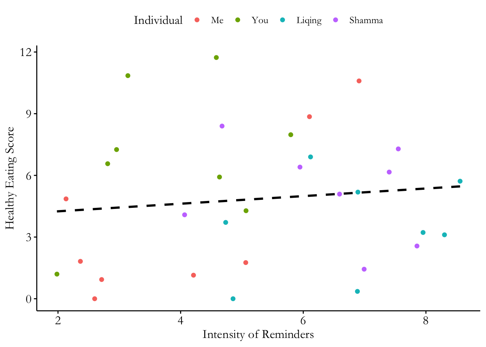

Panel data analysis allows researchers to examine how the same observational units change over time. Fixed effects models can account for observed and unobserved time-invariant characteristics, although panel data alone do not guarantee causal identification.
In this tutorial, we will prepare panel data in R and estimate pooled OLS, fixed effects, two-way fixed effects, random effects, and nonlinear fixed effects models. We will also compare modeling strategies and examine how clustered standard errors affect statistical inference.
By the end of this tutorial, you will be familiar with:
1 . Understanding and preparing panel data structures
2 . Estimating fixed effects using demeaning and fixest
3 . Comparing one-way FE, two-way FE, and random effects models
4 . Estimating nonlinear FE models and interpreting clustered standard errors
Front-end Matters
We use the fixest package to estimate fixed effects and two-way fixed effects models. We also use the plm package to estimate random effects models and conduct the Hausman test. The AER package provides the Fatalities dataset for our nonlinear fixed effects demonstration.
The fixest package is a powerful and efficient tool for estimating fixed effects models in R. It supports multi-way fixed effects (e.g., individual and time), clustered standard errors, and instrumental variable estimation — all with a clean and flexible syntax. It’s well-suited for large datasets and is increasingly popular in applied causal inference research.
The plm package is a classic package for panel data analysis in R. It provides a consistent interface for estimating fixed effects, random effects, and other panel-specific models like first differences and between estimators. While it’s less flexible than fixest, it remains a useful tool for learning core panel data methods and comparing estimation strategies like fixed vs. random effects.
library(tidyverse)
── Attaching core tidyverse packages ──────────────────────── tidyverse 2.0.0 ──
✔ dplyr 1.2.1 ✔ readr 2.2.0
✔ forcats 1.0.1 ✔ stringr 1.6.0
✔ ggplot2 4.0.3 ✔ tibble 3.3.1
✔ lubridate 1.9.5 ✔ tidyr 1.3.2
✔ purrr 1.2.2
── Conflicts ────────────────────────────────────────── tidyverse_conflicts() ──
✖ dplyr::filter() masks stats::filter()
✖ dplyr::lag() masks stats::lag()
ℹ Use the conflicted package (<http://conflicted.r-lib.org/>) to force all conflicts to become errors
library(AER)
Loading required package: car
Loading required package: carData
Attaching package: 'car'
The following object is masked from 'package:dplyr':
recode
The following object is masked from 'package:purrr':
some
Loading required package: lmtest
Loading required package: zoo
Attaching package: 'zoo'
The following objects are masked from 'package:base':
as.Date, as.Date.numeric
Loading required package: sandwich
Loading required package: survival
Registered S3 method overwritten by 'lfe':
method from
nobs.felm broom
Attaching package: 'plm'
The following objects are masked from 'package:dplyr':
between, lag, lead
The structure of panel data
Panel data consists of observations on multiple units (such as individuals, countries, or firms) tracked over multiple time periods. It involves observing the same units across time, although not every unit needs to appear in every time period — this is known as an unbalanced panel. Each row represents a unit at a specific time point, forming a long-format structure. This setup enables researchers to study within-unit change over time while controlling for time-invariant characteristics. By combining both cross-sectional and time-series dimensions, panel data offers powerful opportunities for causal inference.
This is an example of long-format panel data:
tidydata <- table1tidydata
# A tibble: 6 × 4
country year cases population
<chr> <dbl> <dbl> <dbl>
1 Afghanistan 1999 745 19987071
2 Afghanistan 2000 2666 20595360
3 Brazil 1999 37737 172006362
4 Brazil 2000 80488 174504898
5 China 1999 212258 1272915272
6 China 2000 213766 1280428583
But sometimes, when we receive data, it doesn’t come in the long format required for panel data analysis. Instead, it may be in a wide format, where repeated measurements for each unit (e.g., different years) appear as separate columns.
untidydata <- table4auntidydata
# A tibble: 3 × 3
country `1999` `2000`
<chr> <dbl> <dbl>
1 Afghanistan 745 2666
2 Brazil 37737 80488
3 China 212258 213766
We’ll need to reshape this data into long format using pivot_longer() before we can analyze it as panel data.
longer <- untidydata |>pivot_longer(c(`1999`, `2000`), names_to ="year", values_to ="cases")#specifying the columns by column nameslonger
# A tibble: 6 × 3
country year cases
<chr> <chr> <dbl>
1 Afghanistan 1999 745
2 Afghanistan 2000 2666
3 Brazil 1999 37737
4 Brazil 2000 80488
5 China 1999 212258
6 China 2000 213766
Fixed Effect
Textbook Example data
This simulated dataset contains four individuals, each observed eight times. We examine the relationship between Intensity of Reminders and Healthy Eating Score. Individuals differ in their baseline healthy eating behavior, creating a potential source of omitted variable bias in pooled OLS.
We will estimate the relationship using three approaches: pooled OLS, manually demeaned OLS, and fixed effects with fixest. This demonstrates how removing between-individual differences changes the estimated relationship.
# A tibble: 6 × 4
Individual IndNo IntensityOfReminders HealthyEatingScore
<fct> <int> <dbl> <dbl>
1 You 1 1.98 1.20
2 You 1 4.58 11.7
3 You 1 2.81 6.57
4 You 1 2.96 7.26
5 You 1 5.07 4.28
6 You 1 3.14 10.9
Visualization:
ggplot(Demo, aes(x = IntensityOfReminders,y = HealthyEatingScore, color = Individual)) +geom_point() +theme_pubr() +geom_smooth(method ="lm", se =FALSE, color ="black", linetype ="dashed")+labs(x ="Intensity of Reminders",y ="Healthy Eating Score")+theme(text =element_text(size =13, family="Garamond"),axis.title.x =element_text(size =13, family="Garamond"),axis.title.y =element_text(size =13, family="Garamond"))
`geom_smooth()` using formula = 'y ~ x'

OLS model
We begin with a simple Ordinary Least Squares (OLS) regression, where we estimate the relationship between Intensity of Reminders and Healthy Eating Score, ignoring individual differences. This model assumes that all individuals share the same intercept and slope — that is, it pools all observations together without accounting for the fact that each individual may have a different baseline level of healthy eating. While easy to estimate and interpret, this approach risks omitted variable bias if there are time-invariant individual characteristics (like personal motivation or lifestyle) that influence both the reminders and the outcome.
Call:
lm(formula = HealthyEatingScore ~ IntensityOfReminders, data = Demo)
Residuals:
Min 1Q Median 3Q Max
-4.7976 -2.8402 0.0088 2.0486 7.0025
Coefficients:
Estimate Std. Error t value Pr(>|t|)
(Intercept) 3.8820 1.6860 2.303 0.0284 *
IntensityOfReminders 0.1850 0.3004 0.616 0.5427
---
Signif. codes: 0 '***' 0.001 '**' 0.01 '*' 0.05 '.' 0.1 ' ' 1
Residual standard error: 3.311 on 30 degrees of freedom
Multiple R-squared: 0.01248, Adjusted R-squared: -0.02044
F-statistic: 0.3791 on 1 and 30 DF, p-value: 0.5427
\(y = 0.185X+3.882\). This indicates that for each one-unit increase in reminder intensity, the Healthy Eating Score increases by 0.19 points. However, the p-value for this effect is 0.543, which indicates that the relationship is not statistically significant at conventional levels.
De-meaned model
Another way to estimate a fixed effects model is by manually demeaning the data — that is, subtracting each individual’s mean from their own observations. This removes all between-individual variation, leaving only the within-individual variation over time. When we run a regression on the demeaned variables, we get the same slope as a fixed effects model, since we’ve effectively controlled for all time-invariant individual characteristics.
This approach is useful for illustrating the logic of fixed effects and helps students see exactly what is being removed from the data.
Demo_demeaned <- Demo |>group_by(Individual) |>mutate(# Calculate individual meansmean_X =mean(IntensityOfReminders),mean_Y =mean(HealthyEatingScore),# Demean X and YX_demeaned = IntensityOfReminders - mean_X,Y_demeaned = HealthyEatingScore - mean_Y ) |>ungroup()# Inspect individual means and demeaned valuesDemo_demeaned |> dplyr::select(Individual, mean_X, mean_Y, X_demeaned, Y_demeaned) |>head(10)
# A tibble: 10 × 5
Individual mean_X mean_Y X_demeaned Y_demeaned
<fct> <dbl> <dbl> <dbl> <dbl>
1 You 3.87 6.97 -1.89 -5.77
2 You 3.87 6.97 0.711 4.76
3 You 3.87 6.97 -1.06 -0.405
4 You 3.87 6.97 -0.916 0.282
5 You 3.87 6.97 1.20 -2.69
6 You 3.87 6.97 -0.731 3.88
7 You 3.87 6.97 1.93 1.01
8 You 3.87 6.97 0.763 -1.05
9 Me 4.01 3.75 2.09 5.11
10 Me 4.01 3.75 1.05 -1.99
# Run OLS on demeaned variablesmodel_demeaned <-lm( Y_demeaned ~ X_demeaned,data = Demo_demeaned)summary(model_demeaned)
Call:
lm(formula = Y_demeaned ~ X_demeaned, data = Demo_demeaned)
Residuals:
Min 1Q Median 3Q Max
-4.3688 -2.2382 -0.0088 1.6162 4.6900
Coefficients:
Estimate Std. Error t value Pr(>|t|)
(Intercept) 3.614e-16 4.962e-01 0.000 1.000
X_demeaned 7.448e-01 3.487e-01 2.136 0.041 *
---
Signif. codes: 0 '***' 0.001 '**' 0.01 '*' 0.05 '.' 0.1 ' ' 1
Residual standard error: 2.807 on 30 degrees of freedom
Multiple R-squared: 0.132, Adjusted R-squared: 0.103
F-statistic: 4.561 on 1 and 30 DF, p-value: 0.04098
After demeaning, both X and Y represent deviations from each individual’s average. The estimated slope is 0.74, indicating that a one-unit increase in reminder intensity relative to an individual’s average is associated with a 0.74-point increase in their healthy eating score relative to their average.
Unlike pooled OLS (slope = 0.185), the demeaned model uses only within-individual variation. The slope is identical to the fixed effects estimator, although standard errors and p-values may differ due to degrees-of-freedom adjustments and the treatment of within-individual error correlation.
Fixed effects
The most efficient and flexible way to estimate a fixed effects model in R is by using the fixest package. This package allows us to easily specify fixed effects using the | operator, without manually creating dummy variables or demeaning the data. Here, we include Individual as a fixed effect to account for time-invariant differences across individuals, while estimating a common slope for ‘IntensityOfReminders’.
This approach is mathematically equivalent to both the OLS with individual dummies and the demeaned model. However, fixest handles fixed effects more efficiently and also supports clustered standard errors, multi-way fixed effects, and IV estimation — making it a preferred choice for applied panel data analysis.
model_fe <-feols(HealthyEatingScore ~ IntensityOfReminders | Individual, data = Demo)summary(model_fe)
The output indicates that we have 32 observations across 4 individuals. The estimated slope is 0.74, identical to the demeaned OLS model. This confirms that both approaches produce the same coefficient using within-individual variation.
By default, feols() uses conventional IID standard errors. In the next section, we will cluster standard errors by individual and examine how this changes statistical inference without changing the estimated coefficient.
Clustered Standard Errors
In panel data, repeated observations from the same individual may have correlated errors. Conventional IID standard errors assume that observations are independent, which may lead to incorrect statistical inference.
We can account for within-individual correlation by clustering standard errors at the individual level.
Compare this output with the previous model using default IID standard errors.
Notice that the estimated slope remains 0.74, but the standard error, t-statistic, and p-value have changed. This is because clustering changes how we estimate uncertainty, not the regression coefficient itself.
Note: Our simulated dataset contains only four individuals (four clusters). Therefore, the clustered standard errors are useful for demonstration, but statistical significance should be interpreted cautiously.
You may also notice that there is no intercept in the fixed effects model output. This is because fixed effects absorb the individual-specific intercepts rather than reporting a single common intercept.
We can view these estimated individual fixed effects using fixef():
fixef(model_fe)
$Individual
Liqing Me Shamma You
-1.5292183 0.7580456 0.4231911 4.0897559
attr(,"class")
[1] "fixest.fixef" "list"
attr(,"exponential")
[1] FALSE
Comparing Three Models
We now compare the estimated slopes from pooled OLS, demeaned OLS, and fixed effects estimation.
# A tibble: 3 × 2
Model Coefficient
<chr> <dbl>
1 Pooled OLS 0.185
2 Demeaned OLS 0.745
3 Fixed Effects 0.745
The demeaned OLS and fixed effects models produce the same slope estimate, while pooled OLS may produce a different estimate because it also uses between-individual variation.
In practice, we usually use fixest rather than manually demeaning variables, particularly when working with multiple fixed effects and clustered standard errors.
Two-way Fixed Effect
So far, we have used individual fixed effects to account for time-invariant differences between observational units. However, some unobserved factors may change over time while affecting all units in the same period.
Two-way fixed effects (TWFE) models include both unit and time fixed effects. Unit fixed effects account for stable differences across units, while time fixed effects account for common time-specific shocks.
TWFE does not automatically eliminate all sources of endogeneity, especially unobserved confounders that vary across both units and time.
Now, let’s have a practice using real cross-country time series data: the gapminder dataset. This dataset includes information on life expectancy, GDP per capita, and population size for countries around the world from 1952 to 2007, in five-year increments. It provides a simple but effective example of panel data where each country is observed repeatedly over time. We’ll use this dataset to estimate a two-way fixed effects model, controlling for both country-specific characteristics (like geography, health infrastructure, or culture) and time-specific shocks (like global medical advances or economic downturns).
Let’s compare the results from the one-way FE model (country only) and the two-way FE model (country and year).
In the one-way FE model, both GDP per capita (β = 4.477, p < 0.001) and population (β = 11.958, p < 0.001) are positively associated with life expectancy. A 10% increase in GDP per capita is associated with approximately 0.43 additional years of life expectancy, while a 10% increase in population is associated with 1.14 additional years, holding the other variable constant.
The two-way FE model additionally accounts for year-specific shocks shared across countries, such as global medical advances and international economic conditions. After adding year fixed effects, both coefficients decrease but remain statistically significant (GDP per capita: β = 2.982, p < 0.001; population: β = 8.321, p < 0.001). A 10% increase in GDP per capita is now associated with approximately 0.28 additional years of life expectancy, while a 10% increase in population is associated with 0.79 additional years.
These differences suggest that common time trends or shocks may explain part of the relationships observed in the one-way FE model. However, changes in coefficients alone do not establish that the original model was biased or that TWFE provides a causal estimate.
The RMSE decreases slightly from 3.093 to 2.968, while Within R² drops from 0.780 to 0.190. Since Within R² is calculated using different fixed effects structures, these values are not directly comparable. Model selection should be based primarily on theoretical and identification considerations rather than model fit alone.
Clustered Standard Errors
In the previous section, we estimated a two-way fixed effects model with both country and year fixed effects. But should we also cluster standard errors by country or year?
Remember that fixed effects and clustered standard errors serve different purposes. Year fixed effects control for common year-specific shocks, while clustering accounts for correlation in the remaining regression errors.
Let’s compare different standard error estimators using the same TWFE model.
Heteroskedasticity-robust SE allow unequal error variances but do not account for correlation between observations. Clustered SE allow errors to be correlated within clusters.
Why do we usually cluster by country in this example?
We observe the same countries repeatedly, so errors may be correlated within countries over time. Clustering by country accounts for this serial correlation.
Clustering by year instead allows errors to be correlated across countries within the same year. However, Gapminder contains only 12 years compared with 142 countries. With only 12 year clusters, conventional cluster-robust standard errors and p-values may be unreliable.
Two-way clustering accounts for both forms of dependence, but the small number of year clusters remains a limitation.
Notice that the regression coefficients remain unchanged across all four approaches. Only the standard errors, t-statistics, and p-values may change.
Random Effect
The random effects model is an alternative to fixed effects for analyzing panel data. While fixed effects estimate a separate intercept for each unit (e.g., each country), random effects assume that these unit-specific differences are random deviations from a shared average intercept, drawn from a common distribution. This assumption allows random effects models to use both within-unit and between-unit variation, which often makes them more efficient. However, this efficiency comes at a cost: it assumes that the unit-level effects are not correlated with the explanatory variables. If that assumption is violated, the random effects model may produce biased estimates. We’ll demonstrate this using the gapminder data, then test the assumptions using the Hausman test.
We’ll use the plm package to estimate both fixed and random effects models for life expectancy using GDP per capita and population as predictors.
Oneway (individual) effect Within Model
Call:
plm(formula = life_exp ~ log(gdp_pc) + log_pop, data = pdata,
effect = "individual", model = "within")
Balanced Panel: n = 142, T = 12, N = 1704
Residuals:
Min. 1st Qu. Median 3rd Qu. Max.
-23.181 -1.299 0.109 1.752 8.641
Coefficients:
Estimate Std. Error t-value Pr(>|t|)
log(gdp_pc) 4.47740 0.20879 21.445 < 2.2e-16 ***
log_pop 11.95839 0.23388 51.131 < 2.2e-16 ***
---
Signif. codes: 0 '***' 0.001 '**' 0.01 '*' 0.05 '.' 0.1 ' ' 1
Total Sum of Squares: 73973
Residual Sum of Squares: 16307
R-Squared: 0.77956
Adj. R-Squared: 0.75935
F-statistic: 2758.33 on 2 and 1560 DF, p-value: < 2.22e-16
summary(re_model)
Oneway (individual) effect Random Effect Model
(Swamy-Arora's transformation)
Call:
plm(formula = life_exp ~ log(gdp_pc) + log_pop, data = pdata,
effect = "individual", model = "random")
Balanced Panel: n = 142, T = 12, N = 1704
Effects:
var std.dev share
idiosyncratic 10.453 3.233 0.256
individual 30.392 5.513 0.744
theta: 0.8331
Residuals:
Min. 1st Qu. Median 3rd Qu. Max.
-22.3377 -2.3870 0.0409 2.6634 12.3738
Coefficients:
Estimate Std. Error z-value Pr(>|z|)
(Intercept) -115.17778 3.35470 -34.333 < 2.2e-16 ***
log(gdp_pc) 6.71888 0.21960 30.596 < 2.2e-16 ***
log_pop 7.60075 0.22363 33.987 < 2.2e-16 ***
---
Signif. codes: 0 '***' 0.001 '**' 0.01 '*' 0.05 '.' 0.1 ' ' 1
Total Sum of Squares: 79829
Residual Sum of Squares: 26968
R-Squared: 0.66217
Adj. R-Squared: 0.66178
Chisq: 3334.13 on 2 DF, p-value: < 2.22e-16
Let’s compare the results from the Fixed Effects (FE) and Random Effects (RE) models.
In the FE model, both GDP per capita (β = 4.477, p < 0.001) and population (β = 11.958, p < 0.001) are positively associated with life expectancy. A 10% increase in GDP per capita is associated with approximately 0.43 additional years of life expectancy, while a 10% increase in population is associated with 1.14 additional years, holding the other variable constant and controlling for country fixed effects.
In the RE model, both variables remain statistically significant (p < 0.001), but the coefficients change. GDP per capita has a larger coefficient (β = 6.719), while population has a smaller coefficient (β = 7.601). Unlike FE, which uses only within-country variation, RE uses both within- and between-country variation.
The RE output also reports variance components. Approximately 74.4% of the estimated composite error variance is attributable to differences between countries, while 25.6% is attributable to idiosyncratic errors. This indicates substantial unobserved heterogeneity across countries.
However, RE assumes that these unobserved country-specific characteristics are uncorrelated with the explanatory variables. If this assumption is violated, RE estimates may be inconsistent. In the next section, we will use the Hausman test to assess whether the differences between FE and RE estimates provide evidence against this assumption.
Hausman Test: Should We Trust Random Effects?
The Hausman test compares the fixed effects and random effects estimators.
Under the null hypothesis, the RE estimator is consistent. A significant difference between the two sets of estimates provides evidence against the assumptions required for RE consistency.
Hausman Test
data: life_exp ~ log(gdp_pc) + log_pop
chisq = 3194.4, df = 2, p-value < 2.2e-16
alternative hypothesis: one model is inconsistent
Interpretation:
If p < 0.05, reject the null hypothesis. This provides evidence against the RE assumptions, and FE is generally preferred.
If p >= 0.05, fail to reject the null hypothesis. RE may be appropriate, but this does not prove its assumptions are satisfied.
The Hausman test is one piece of evidence. Model selection should also consider the research question, theoretical assumptions, and potential sources of confounding.
Nonlinear Fixed Effects
So far, we’ve worked with linear fixed effects models where the outcome variable is continuous. However, in many real-world applications, outcomes are nonlinear — for example, binary decisions (e.g., adopted a policy or not), counts (e.g., number of events), or ordinal scales. In these cases, we often turn to nonlinear models such as logistic regression or Poisson regression. Fortunately, we can still incorporate fixed effects into these models to control for unobserved, time-invariant characteristics.
In this example, we use the Fatalities dataset from the AER package, which contains U.S. state-level panel data from 1982 to 1988.
We construct a binary outcome indicating whether a state has a minimum legal drinking age of 21 (drink21). We examine its association with beer taxes while controlling for spirits consumption, average miles per driver, and the percentage of young drivers.
We will compare a fixed effects logistic regression with a linear probability model using fixed effects. Our goal is to understand how different estimators handle binary outcomes, rather than establish a causal effect of beer taxes on drinking-age policies.
Notice that the fixed effects logistic model retains only 161 observations from 23 states. The other 25 states are dropped because their binary outcomes are perfectly predicted by the state fixed effects, including cases where the outcome never changes over time. This reduces the estimation sample.
The coefficient for beer tax is positive (β = 137.102), suggesting that higher beer taxes are associated with higher log-odds of having a minimum legal drinking age of 21. However, this relationship is not statistically significant (p = 0.115). Spirits consumption has a negative coefficient (β = -315.453, p = 0.073), which is marginally significant at the 10% level but not at the 5% level. Neither miles driven (p = 0.930) nor the proportion of young drivers (p = 0.106) is statistically significant.
Remember that logistic regression coefficients represent changes in log-odds, not probabilities. Also, unlike conditional fixed effects logit, feglm() explicitly estimates state-specific effects, which may introduce incidental parameters bias in short panels.
Now let’s fit the same model using a linear fixed effects approach and compare the results.
fe_linear <-feols(drink21 ~ beertax + spirits + miles + youngdrivers | state, data = Fatalities)summary(fe_linear)
The linear fixed effects model treats the binary outcome as a linear probability model (LPM). Its coefficients represent changes in the predicted probability of having a legal drinking age of 21.
The fixed effects logit model instead estimates relationships on the log-odds scale.
Notice that the results may differ in coefficient direction and statistical significance. However, we must be careful when interpreting these differences:
The two models use different functional forms and coefficient scales.
The logistic FE model may drop states with no variation in the outcome, while the linear FE model retains them.
Therefore, differences in estimates may reflect both model specification and sample composition.
Optional Extension: Correlated Random Effects (Mundlak Approach)
Standard random effects models assume that unit-specific effects are uncorrelated with the explanatory variables. But what if this assumption does not hold?
The Mundlak approach extends random effects models by including unit-level means of time-varying explanatory variables.
This allows us to account for certain correlations between unobserved unit characteristics and explanatory variables, while retaining the ability to estimate coefficients for time-invariant predictors.
In this balanced linear panel, the Mundlak CRE specification reproduces the within-unit slope estimates from the corresponding one-way FE model.
At the same time, CRE can estimate coefficients for time-invariant variables such as continent.
However, estimating coefficients for time-invariant variables does not automatically make their interpretation causal. Additional assumptions are still required.